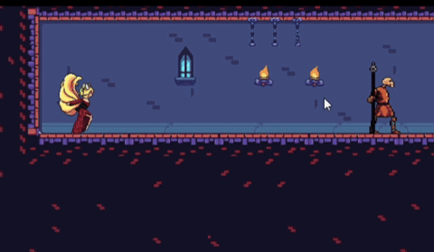
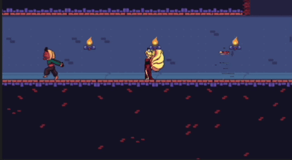
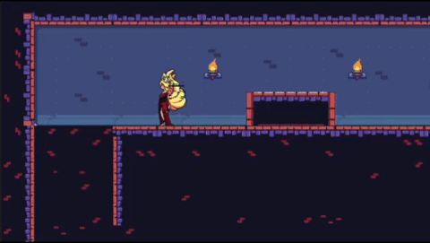
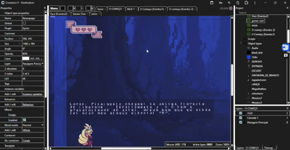

Seja bem vindo Máculado(a)!

Essas imagens guardam mais do que pixels — são fragmentos de um mundo esquecido, vislumbres do que te espera.
Observe com atenção, Máculado(a)... cada detalhe pode ser uma pista.
Mas cuidado: encarar o desconhecido tem seu preço.
Aqui você vai encontrar artes que revelam os bastidores do nosso universo, criaturas que talvez você ainda nem tenha enfrentado
e lugares que, por enquanto, só existem nas sombras.
Essa galeria não é só visual — é um portal para o que está por vir, ou para o que já foi esquecido.
Algumas dessas imagens contam histórias. Outras escondem segredos. Todas fazem parte da essência do nosso jogo.
A pergunta é: você está pronto pra ver o que ninguém mais deveria?





